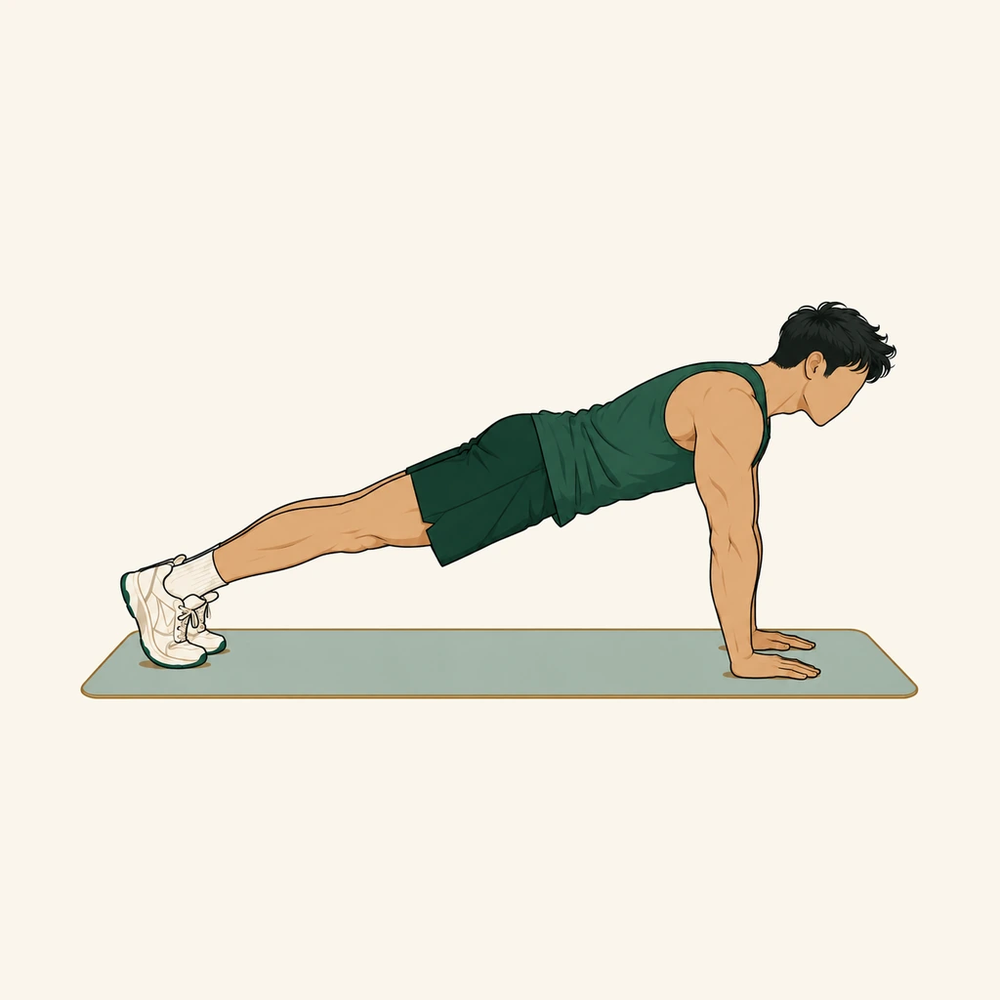
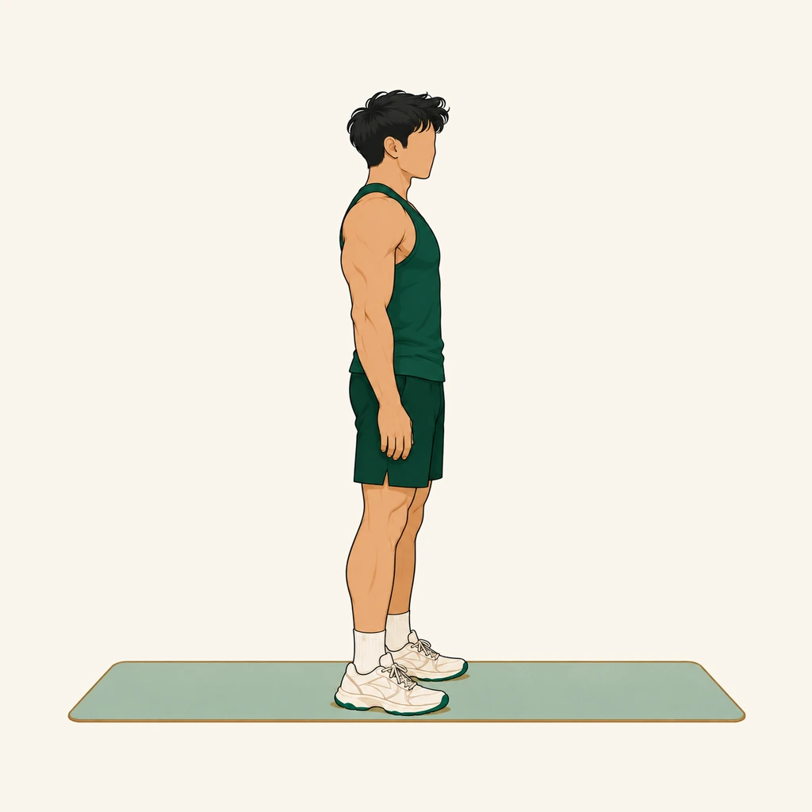
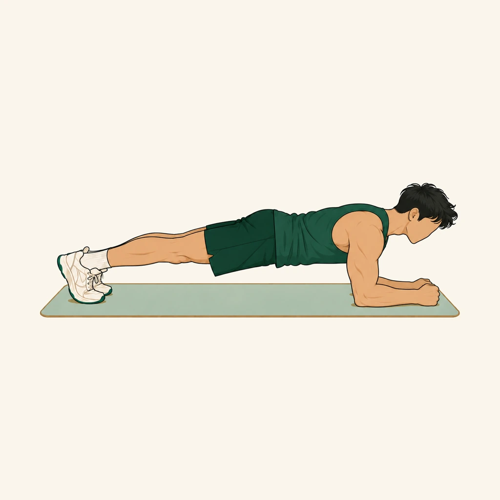

ARYA FIT · V2 FOUNDATION
COMPONENT kit
Picture-first, OLED black, one functional accent. Toggle tiers to inspect the no-blur fallbacks.
Type lockup
WEEK 3 · DAY 2
PUSH day
04SETS LEFT
Navigation + session

Push-upsSet 2 of 4 · 0:45Picture cards


Settings patterns
APPEARANCE
New look (V2)Try the cinematic interface. You can switch back anytime.
EffectsAutomatic tier based on startup stability.Auto›
Buttons + progress
Sheet
YOUR SESSION
Four movements ready when you are.
Upper body28 min · strength›
Visual fixture only · P0